House search update
Friday, October 23, 2026
This update covers 13 active Butler County homes that are within the drive-time rule. Drive times are in minutes to Woodbine (Cranberry), then Foxwood (Mars), then Broadway (Wexford). They assume no traffic, so rush hour will probably be 10-25% longer. None of these has a 1-2 acre lot. The biggest is 0.62 acres.
TOP MATCHES
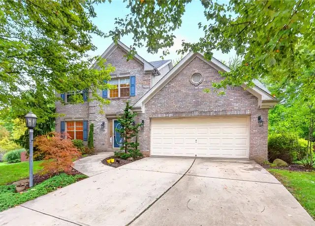
1. 707 Dunbury Ct, Seven Fields - $495,000
4 bed / 2 full + 2 half bath, 2,923 sq ft, built 1999, 0.30 ac
Finished walk-out basement with bar, attached garage, flat fenced yard on a cul-de-sac. Kitchen and baths are dated.
Drive: 17 / 10 / 13
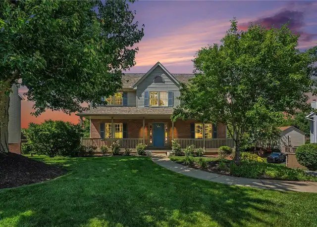
2. 120 Bayberry Ln, Cranberry Twp - $515,000
4 bed / 2.5 bath, 2,106 sq ft, built 1995, 0.30 ac wooded
Finished lower-level game room, built-in garage, oversized driveway, new plumbing. Listed as move-in ready.
Drive: 6 / 17 / 17
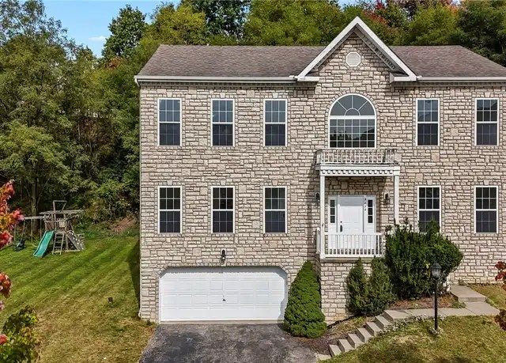
3. 9239 Marshall Rd, Cranberry Twp (Marshall Woods) - $549,900
4 bed / 3.5 bath, 2,944 sq ft, built 2003, 0.26 ac
Finished lower level with game room, flex room and full bath, 2-car garage. HOA is $75 a quarter.
Drive: 10 / 14 / 14

4. 333 Warrick Dr, Seven Fields - $549,900 (cut from $560k)
4 bed / 2.5 bath, 1,990 sq ft, built 1994, 0.29 ac
Large fenced yard, roomy 2-car garage, walk-out basement (not confirmed finished). Pre-inspected with a 1-year warranty.
Drive: 18 / 11 / 11
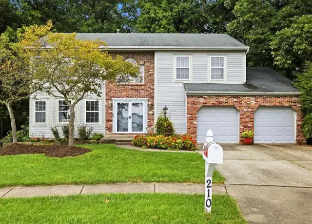
5. 210 Trail Ct W, Cranberry Twp (Kingsbrook) - $524,900
4 bed / 2.5 bath, 2,550 sq ft, built 1996, 0.62 ac wooded, backs to a golf course
Unfinished basement, 2-car garage, updated kitchen. Marketed as having "potential," so it needs some work.
Drive: 8 / 19 / 19
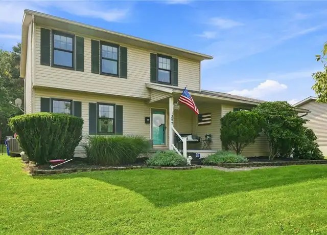
6. 397 Lincoln Ave, Mars - $469,000 (cut from $509k)
4 bed / 2.5 bath, 1,480 sq ft (small), built 2001, 0.44 ac fenced
4-car garage.
Drive: 22 / 11 / 15
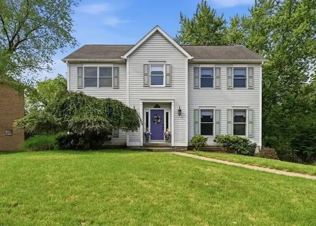
7. Cranberry Twp, Pinehurst (address not published, MLS #1779608) - $499,500
4 bed / 3 bath, 2,376 sq ft, built 1992, 0.39 ac
Open house Sunday, Oct 25, 1-3 pm.
Drive: 6 / 14 / 14
ALSO WORTH A LOOK
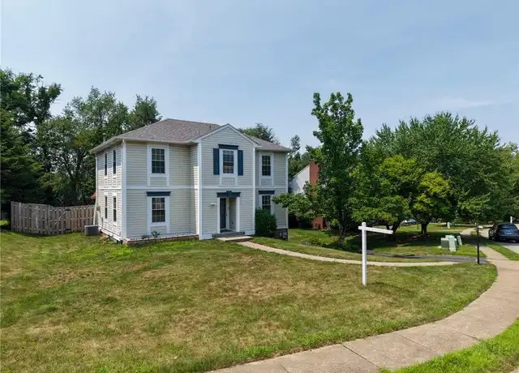
102 Bayberry Ln, Cranberry Twp - $497,000, built 1991, attached 2-car garage
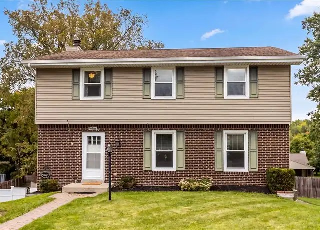
108 Emerald Ct, Cranberry Twp - $429,900, built 1978, finished walk-out
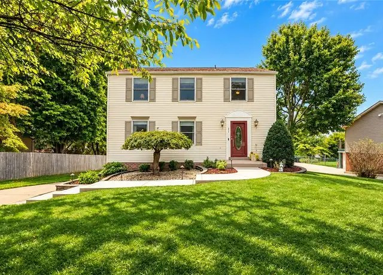
211 Katherine Dr, Cranberry Twp - $439,900, built 1979, finished walk-out
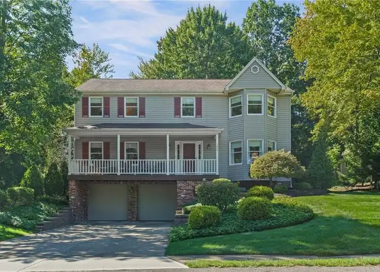
172 Crossing Ridge Trl, Cranberry Twp - $575,000 (a little over), built 1989, renovated main level
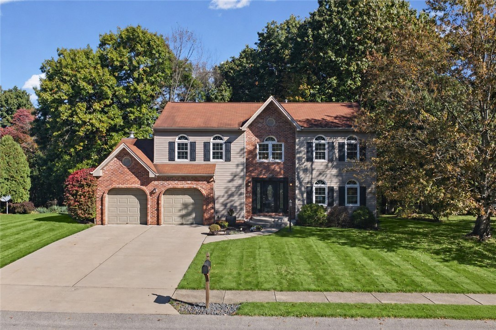
130 Woodbine Dr, Cranberry Twp - $590,000 (a stretch), built 1992, 3,408 sq ft, same street as the Woodbine address
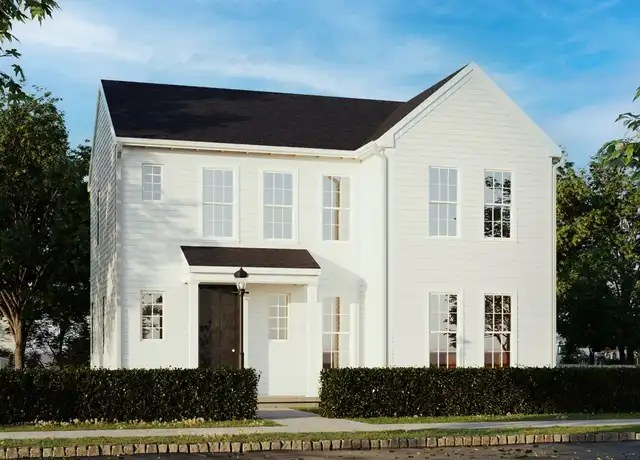
Brookvue by Charter Homes, Cranberry Twp - new construction, $516k-$561k, small lots (photo: Carter plan)
I left out the Wexford and Gibsonia listings because they're in Allegheny County, and dropped homes in Jackson, Evans City, Forward and Middlesex for long drives. Later updates will only include new listings and homes with changes like a price drop.
Prepared by your PA house search assistant
Photos are from the public listing pages (Redfin; Coldwell Banker for 130 Woodbine Dr).